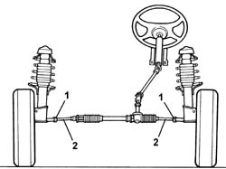

4110A14 STEERING WHEEL - Spoke alignment - Includes. checking and if necessary. adjusting. front wheel toe in
- Path
- Procedures > 41 STEERING UNIT > 4110 STEERING CONTROL AND LINKAGE > 4110A steering control > 4110A14 STEERING WHEEL - Spoke alignment - Includes. checking and if necessary. adjusting. front wheel toe in
- Kind
- repair procedure (removal / refitting; the operation number is the code)
- Applies to
- all engines; all production periods
- Interactive page
- https://sloeber94.github.io/elrnDB-fDbl/en/#/2584709
Applies to: all engines; all production periods
Position the vehicle (in running order) on a lift with suitable equipment for checking the wheel geometry.
Make sure the steering wheel is perfectly straight and secure it in this position.
Raise the lift.
Op. 7055B54 PROTECTION/GUARD UNDER ENGINE - R.R.
Loosen the bands securing the boots to the rods.
1. Loosen the nuts securing the adjustable steering rods.
2. Tighten or loosen the steering box rods until the toe-in value is correct, keeping the front wheels aligned.
The toe-in values refer to a vehicle in standard 0 and standard A.
Standard 0 = unladen vehicle including spare wheel, tools, accessories and fluids (with 5 litres of fuel).
Standard A = unladen vehicle including spare wheel, tools, accessories and suppiles (full fuel tank).
 | Measurement | Value | |
|---|---|---|---|
- | Front wheel toe in (mm) | - 0.86 ± 1 | |
Standard 0 (-) | - | ||
| Measurement | Value | |
|---|---|---|---|
- | 1a - 1b (mm) | -1 ± 1 | |
Standard A (-) | - | ||

Applies to: all engines; all production periods
Tighten the nuts securing the adjustable steering rods to torque.
 | Fastening | Component | Ø | Value (daNm) |
|---|---|---|---|---|
- | Nut | ADJUSTABLE LINK BALL JOINTS | M14 x 1.5 | (On steering box arm) 8.5 |
Tighten the bands for the boots on the steering rods.
Op. 7055B54 PROTECTION/GUARD UNDER ENGINE - R.R.
Lower the vehicle.
Remove the steering lock.
Remove the vehicle from the lift.